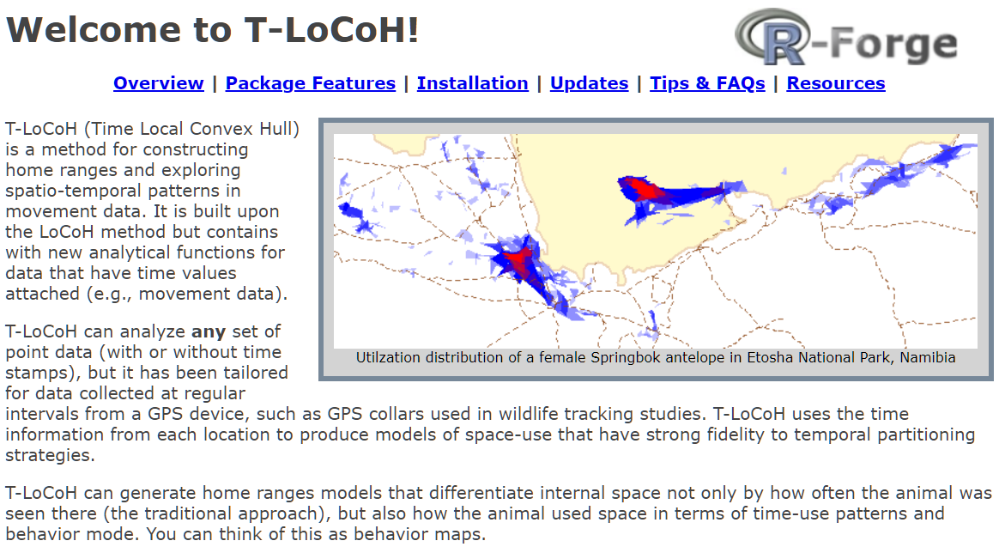
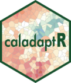

Intro to Spatial Data
Analysis with R
SCGIS 2023
Annual Conference
Introduction Part 2 
Introduction Part 2


t-locoh. Home range constructor and spatial-temporal pattern analysis for wildlife tracking data

uasimg
Data management utilities for drone mapping.
https://ucanr-igis.github.io/uasimg/

Catalogs and manages drone images (sample)
Estimates footprints, computes overlap, explorts flight area to Shapefile
Creates World Files for single images

Bring climate data from Cal-Adapt into R using the API
https://ucanr-igis.github.io/caladaptr/
Pistachio Nut Growth Calculator
https://ucanr-igis.shinyapps.io/pist_gdd/
Chill Portions Under Climate Change Calculator
https://ucanr-igis.shinyapps.io/chill/
Drone Mission Planner for Reforestation Monitoring Protocol
https://ucanr-igis.shinyapps.io/uav_stocking_survey/
Stock Pond Volume Calculator
https://ucanr-igis.shinyapps.io/PondCalc/
Get better at:
1) Understand foundational terms and concepts
2) Hands-on practice
3) Discover RStudio’s bells and whistles
4) Learn how to get help


Wind up a little higher on the learning
curve!